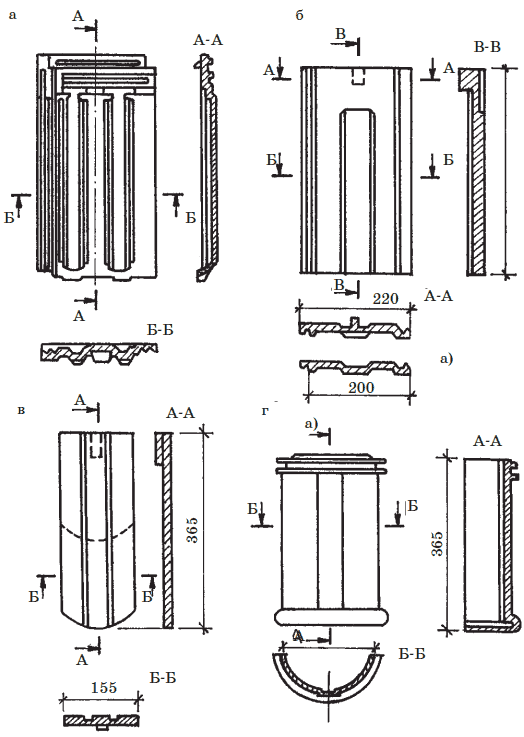
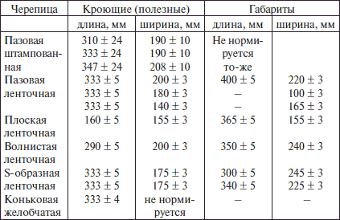
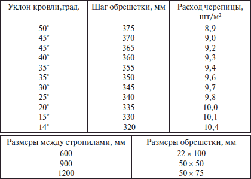

Кровля из черепицы.
 Глиняная черепица
Глиняная черепица
Черепица – это керамический материал, получаемый формированием из глиняной массы с последующим обжигом. Сырьем для изготовления черепицы служат легкоплавкие глины типа кирпичных, но более пластичные и жирные, т. к. черепица имеет небольшую толщину.
Применяют глиняную черепицу в основном для покрытия кровель малоэтажных зданий. Черепица огнестойка, долговечна, расходы на эксплуатацию – незначительны, а запасы дешевого сырья для ее производства практически не ограничены. Из недостатков следует отметить большую массу (до 65 кг/м ), хрупкость, большая трудоемкость изготовления, необходимость придания кровле большого уклона (не менее 50° для обеспечения быстрого и свободного стока воды и ручной способ ее укладки.
В настоящее время выпускают черепицу пазовую штампованную, пазовую ленточную, S-образную ленточную и коньковую желобчатую ( рис. 14). В зависимости от назначения черепица может быть: рядовая – для покрытия скатов кровли; коньковая – для покрытия коньков и ребер; разжелобочная – для покрытия разжелобков; концевая (половинки, косяки) – для замыкания рядов; специального назначения.

Рис. 14. Черепица глиняная: а – пазовая штампованная; б – пазовая ленточная; в – плоская ленточная; г – коньковая
Обжигают черепицу в кольцевых или туннельных печах при температуре 1000–1100 °C.
Требование
К глиняной черепице предъявляются следующие требования: она должна быть правильной формы с гладкими поверхностями и ровными краями, без отбитостей, трещин и известковых включений. Допускаются искривления поверхности и ребер черепицы не более, чем на 3 мм; отбитие или смятие шипов допускается не более 1/3 высоты шипа; отклонения линейных размеров по длине не должны превышать 5 мм, а по ширине – 3 мм. Исключение составляет пазовая штампованная черепица. Цвет черепицы должен быть однотонным, а ее структура в изломе однородной. Черепица должна быть нормально обожжена, о чем свидетельствует чистый, недребезжащий звук, издаваемый при легком постукивании металлическим предметом. Она должна выдерживать 25-кратное замораживание и оттаивание.
Типы и габариты глиняной черепицы даны в табл. 6.
Таблица 6. Размеры глиняной черепицы
Глубина пазов (так называемых фальцев) черепицы должна быть не менее 5 мм, высота шипов для подвески штампованной черепицы – не менее 10 мм, ленточной – не менее 20 мм. Разрушающая нагрузка на излом в воздушно-сухом состоянии – не менее 70 кг на одну черепицу. Масса 1 м покрытия из черепицы в насыщенном водой состоянии зависит от типа черепицы. Так для плоской ленточной масса должна быть не более 65 кг; для пазовой штампованной и ленточной, волнистой и S-образной ленточной – не более 50 кг. Масса 1 м коньковой черепицы не должна превышать 8 кг.
Для крепления к обрешетке пазовая штампованная черепица имеет на тыльной стороне ушко с отверстием, а у ленточной черепицы это отверстие в средней части шипа. Диаметр отверстия должен быть не меньше 1,5 мм.
Волнистая ленточная глиняная черепица для крепления к обрешетке имеет одно отверстие диаметром 5–6 мм на расстоянии 4–5 см от края.
Цементно-песчаная черепица (ЦПЧ) готовится прессованием под высоким давлением окрашенной растворной смеси. Смесь состоит из точно дозированных компонентов: портландцемента, кварцевого песка, щелочестойкого пигмента и воды. Цвет черепицы, благодаря введению пигмента в растворную смесь, сохраняется постоянным в течение всего срока службы кровельного материала. Цементно-песчаная черепица отличается точными размерами (отклонения от стандартных размеров не более 2 мм). Так как портландцемент во влажных условиях может твердеть годами, черепица также в процессе эксплуатации годами набирает прочность. Это положительно выделяет ее среди других видов черепицы, «стареющих» с течением времени, т. е. со временем теряющих свои первоначальные технические свойства.
Совет
Структура такой черепицы позволяет кровле «дышать», поэтому влага, скапливающаяся под крышей, быстро испаряется, а это препятствует образованию плесени и гнили. В доме под такой крышей – приятный и здоровый воздух.
Рассмотрим этот вид черепицы на основе продукции, выпускаемой совместным российско-германским предприятием «БРААС ДСК-1», расположенном в Москве. Это один из двухсот заводов фирмы БРААС, расположенных в 39 странах мира. Еще в восьмидесятых годах за счет использования вместо капризной в производстве глины стабильной по своим свойствам цементно-песчаной смеси фирме удалось осуществить производство черепицы методом непрерывного проката с небывалой скоростью – 166 плиток в минуту (цикл производства одной плитки из глины растягивается на один – два месяца) и обеспечить снижение цен на черепицу в два раза. При этом впервые в непрерывном процессе была получена черепица наиболее сложной формы – желобчатая. Главный показатель долговечности черепицы – ее морозостойкость у сверхплотной прокатной ЦПЧ оказалась значительно выше, чем у ее глиняной предшественницы – далеко за 1000 циклов замораживания – оттаивания. Производители говорят, что на это изделие можно с легкой душой дать гарантию и на 2000 и на 3000 лет, но это вряд ли кому-нибудь нужно ( табл. 7).
Таблица 7. Ориентировочный расход цементно-песчаной черепицы БРААС и шаг обрешетки в зависимости от уклона кровли
На заметку
И еще одно новшество: несмотря на то, что черепичные кровли гораздо тяжелее, чем обычные, перерасход древесины на строительные конструкции не столь существенен, как кажется на первый взгляд. Опыт говорит, что он не превышает 15–20 %, что укладывается в пределы допускаемой ошибки предварительного статического расчета. При шестидесятиградусном наклоне мансардного ската поперек стропил действует только половина веса кровли (катет, лежащий против угла в 30°), а снеговая нагрузка согласно нормативных документов и вовсе исключается. При дальнейшем увеличении угла наклона стропил, характерного для мансард, нагрузка от веса черепицы стремится к нулю.
Цементно-песчаная черепица БРААС может применяться для устройства кровель строящихся и реконструкции старых деревянных, кирпичных и других домов как с коньковой крышей, так и для круглых башен, углов, арок и углублений.